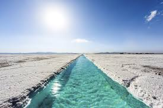
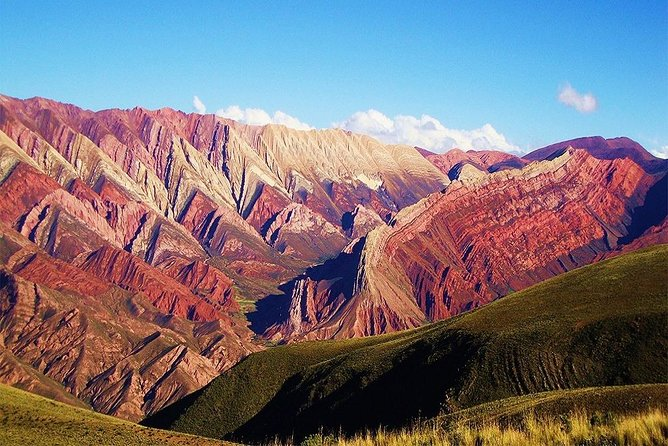
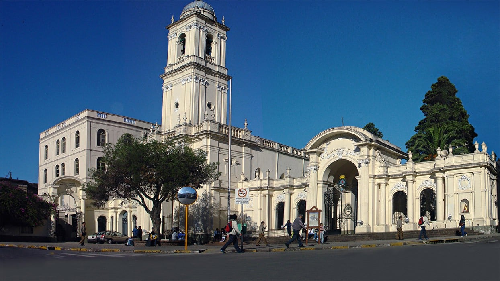
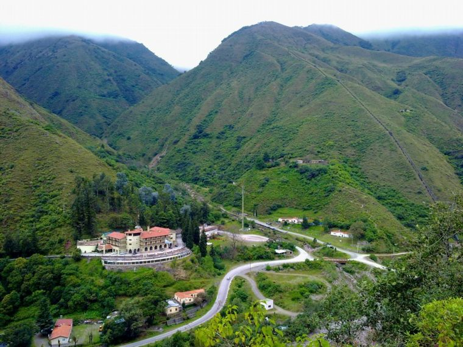

Purmamarca - Hill of Seven Colors
Description: A stunning hill with multicolored layers of rock, located near the picturesque village of Purmamarca.
Location: Quebrada de Humahuaca

Salinas Grandes
Description: A vast salt flat offering breathtaking landscapes and unique photographic opportunities.
Location: Between Jujuy and Salta provinces

Hornocal - Mountain of Fourteen Colors
Description: A colorful mountain range that reveals vibrant layers of minerals and sediments.
Location: Near Humahuaca

San Salvador de Jujuy Cathedral
Description: A beautiful colonial cathedral located in the capital city of Jujuy province.
Location: San Salvador de Jujuy

Termas de Reyes
Description: Natural hot springs surrounded by mountains, offering relaxation and scenic views.
Location: 19 km from San Salvador de Jujuy